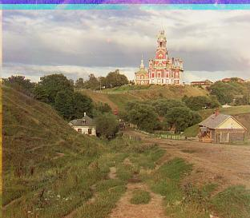

In this project, I restored images that been taken separately in three different channels and layered them on top of each other to restore color. The layering of the three channels led to the original beauty of the scene being restored.

